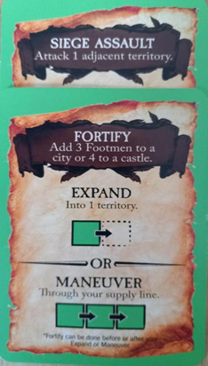

Rules and objective of the game remain unchanged. 1 player and 3 Automatons. You win if you are the first to have 7 crowns.
For combats, carry out first those of the attacking camp that has the turn, and then in chronological order.
5 coins each, 2 crowns, 10 footmen, 1 castle.
Choose a color and place the other 3 around the table. You will be the last player in the first round. Randomly draw a capital for the Automaton to your left (who will therefore be the first to play). Place one of its crowns on it, its castle and (X) footmen and (X) footmen on one of the adjacent territories (see following table). Then do the same for the 2nd and then 3rd automaton. Choose a capital for yourself from the remaining 5 (place footmen there and on an adjacent territory that is not a city. 5 in total, without necessarily following the table). Repeat the same with the last 4 capitals, but this time without placing a castle. You will therefore receive the last one.
Each camp then receives the tax amount from its 2 capitals (+ the starting 5.)
[AUTOMATON CAPITALS (footmen) / AN ADJACENT TERRITORY (footmen).]
MADRID (3) / VALENCE (2)
PARIS (3) / LORRAINE (2), if not available: NORMANDY (2), if not available: NAVARRE (2)
LONDON (3) / LORRAINE (2), if not available: NORMANDY (2), if not available: WALES (2)
STOCKHOLM (3) / DENMARK (2), if not available: FINLAND (2)
KIEV (2) / SMOLENSK (3)
ROME (3) / LOMBARDY (2)
BERLIN (3) / LORRAINE (2), if not available: DENMARK (2), if not available: BOHEMIA (2) or FRANCONIA (2) (random die between these two)
CONSTANTINOPLE (3) / BULGARIA (2)
As in the basic rules, choose 2 cards. For the Automatons, take two from their deck and keep them face down, one on top of the other. Start with the first player and follow chronological order.
When the decks are exhausted, reshuffle them for the Automatons.
(the rules change for some of them)
If the Automaton absolutely cannot do anything (note, it can always take actions that are not always to its advantage!), draw another card, if possible, from its deck.
If the Automaton has 4 or fewer silver coins, it will tax. It will tax the city that would bring it the most. (Usual rules; +1 per connected non-urban territory and + tax value of cities connected to the chosen city). In case of a tie, choose for it the city giving a TAX bonus (if multiple choices, choose randomly with a die).

| SILVER | FOOTMEN | ARCHERS | CAVALRY | SIEGE WEAPON | CASTLE |
|---|---|---|---|---|---|
| 5 | 2 | 1 | |||
| 6 | 1 | 1 | 1 | ||
| 7 | 2 | 1 | 1 | ||
| 8 | 2 | 2 | |||
| 9 | 2 | 2 | 1 | ||
| 10 | 1 | ||||
| 11 | 1 | 1 | |||
| 12 | 1 | ||||
| 13 | 1 | 1 | |||
| 14 | 2 | 1 | |||
| 15 | 2 | 1 | 1 | ||
| 16 | 2 | 1 | 1 | ||
| 17 | 2 | 1 | 1 | 1 | |
| 18 | 2 | 1 | 1 | ||
| 19 | 2 | 2 | 1 | 1 | |
| 20 | 3 | 1 | 1 | 1 |
If the Automaton has 5 or more silver coins, it will buy. The Automaton NEVER buys a crown card, except if there are no more castles (see following table).
If there are no more castles available, the Automaton will buy a crown card instead. +2 footmen.
If there are insufficient figures for its purchases, it buys other units instead (2 footmen for 1 archer and vice versa). Otherwise, it keeps the rest of its money.
Distribution of units bought by the A.I.
The castle will go on one of its cities yielding the most taxes that does not have a castle.
In case of a tie, choose the one with the fewest units. If still tied, choose randomly with a die. For units, distribute evenly among its cities.
One unit at a time, starting with the cities yielding the most taxes and with the best units (A. Cavalry, B. Archers, C. Footmen. The siege weapon will go on a territory it owns that is closest to an enemy castle. (A. Castle on a city with the highest tax value, B. Castle with the fewest units (each unit counts as 1). In case of a tie, choose randomly with a die).
[Example:]
The Automaton buys 1 cavalry, 1 archer and 2 footmen.
It has 3 cities. Rome (4), Paris (3 with 2 units) and Buda (3 with 4 units).
1. 1 cavalry for Rome / 2. 1 archer for Paris / 3. 1 footman for Buda /4. 1 footman for Rome
This Automaton takes the first player token. From the next turn (after everyone's 2 cards have been played and battles resolved), it will become the first player.
Rule change: For SPLIT EXPEND, the Automaton will not split an army, but may move one of its armies two spaces towards a city to enter it. However, it cannot cross an enemy territory without stopping there.
[Priority:] SPLIT EXPEND, if it cannot enter a city for one reason or another (too far, not enough men for an attack, perform a MANEUVER for it).
[Priority for choosing the city to enter:]
A siege weapon is always required to attack a city with a castle.
In case of ties: priority to the least defended. If still equal, random draw with a die. If the Automaton has multiple armies that meet these criteria, choose the one that will have the most units once it arrives at its destination.
General rules for moving an Automaton's army.
Condition if it's an enemy territory: you must have enough units. Each unit regardless of type counts for 1.
EXPEND (priority): The automaton will move an army from a territory towards a city.
With priority:
If multiple options:
If there are still multiple choices: random (die)
If it cannot enter a city with a single move, it will move an army (its largest possible) adjacent to a city (priority its tax value).
If it cannot make an invasion or move to a territory adjacent to a neutral or enemy city, it will perform a MANEUVER.
[If it cannot do EXPAND or SPLIT EXPEND], it will perform a maneuver.
Choose its territory that can bring the most reinforcement to a territory it owns that is being attacked (*). (while respecting the general rules for automaton movement in the following table. If none of its territories are currently being attacked, perform a maneuver to reinforce an army adjacent to an enemy city (priority: 1. With the highest value / 2. With the fewest units).
(*) If it has multiple cities attacked, it will choose to defend in priority:
General rules for moving an Automaton's army.
Is done for the Automaton always first.
Add 3 footmen to a city or 4 footmen to a castle. The priority is:
Is done for the Automaton always first.
It obviously needs at least 1 siege weapon. It will choose an adjacent territory with the most enemy units. In case of a tie, it will choose the color of the one that has the most units on the entire board. If still tied, choose randomly.
| SILVER | FOOTMEN | ARCHERS | CAVALRY | SIEGE WEAPON | CASTLE |
|---|---|---|---|---|---|
| 5 | 2 | 1 | |||
| 6 | 1 | 1 | 1 | ||
| 7 | 2 | 1 | 1 | ||
| 8 | 2 | 2 | |||
| 9 | 2 | 2 | 1 | ||
| 10 | 1 | ||||
| 11 | 1 | 1 | |||
| 12 | 1 | ||||
| 13 | 1 | 1 | |||
| 14 | 2 | 1 | |||
| 15 | 2 | 1 | 1 | ||
| 16 | 2 | 1 | 1 | ||
| 17 | 2 | 1 | 1 | 1 | |
| 18 | 2 | 1 | 1 | ||
| 19 | 2 | 2 | 1 | 1 | |
| 20 | 3 | 1 | 1 | 1 |